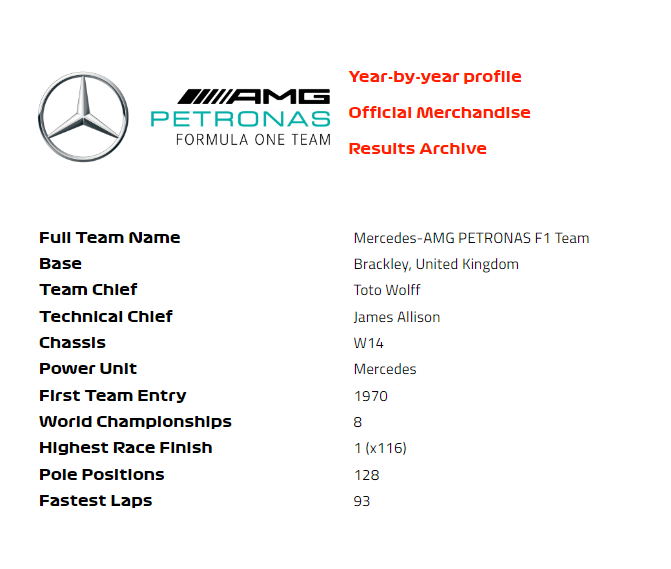
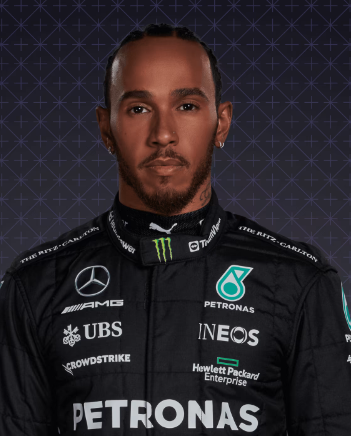
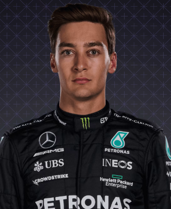

Mercedes

En perfil
El renacimiento moderno de la F1 de Mercedes comenzó con la creación de un equipo oficial para 2010: la plataforma para un ascenso meteórico en el orden de los Grandes Premios. El equipo generó una gran emoción desde el principio con el sensacional regreso de Michael Schumacher, pero los titulares pronto siguieron por buen camino: tres podios en su temporada de debut, todos a través de Nico Rosberg, quien luego logró una pole revolucionaria/doble victoria en China en 2012. La siguiente temporada fue emparejado con Lewis Hamilton, el dúo protagonizó algunas batallas épicas por el título mientras las Flechas de Plata barrían a todos para convertirse en una de las fuerzas más dominantes de la era moderna de la F1. Y con Hamilton ahora asociado con el prometedor George Russell, Mercedes sigue siendo en gran medida el equipo que todos quieren vencer...
2022
Los cambios radicales en las reglas sacuden el orden y el W13 de Mercedes aterriza fuera de la marca, dejándolos como "los mejores del resto" detrás de Red Bull y Ferrari. El recién llegado George Russell se lleva su única victoria y supera a Lewis Hamilton, que no gana por primera vez en su carrera en la F1.
2021
Los cambios radicales en las reglas sacuden el orden y el W13 de Mercedes aterriza fuera de la marca, dejándolos como "los mejores del resto" detrás de Red Bull y Ferrari. El recién llegado George Russell se lleva su única victoria y supera a Lewis Hamilton, que no gana por primera vez en su carrera en la F1.
2020
Justo cuando crees que no pueden mejorar, Mercedes, y en particular Lewis Hamilton, dan un paso más. El actual campeón gana 11 carreras y rompe récords en el camino hacia un séptimo título de pilotos que iguala a Schumacher, a pesar de perderse una ronda con Covid-19. Agregue dos victorias para Valtteri Bottas y es otra doble corona dominante para las Flechas de Plata.
2019
Comience la temporada con cinco victorias uno-dos sin precedentes, y continúe con otras 10 victorias, asegurando así su sexto título doble en el rebote. El trabajo en equipo integral, en lugar del ritmo absoluto, suele ser la clave del éxito. Valtteri Bottas mejora su juego, lo que significa que Lewis Hamilton tiene que trabajar duro para asegurar su sexta corona de pilotos, lo que acerca al tentador británico a igualar el récord histórico de Michael Schumacher.
Pilotos

Lewis Hamilton

Lewis Hamilton